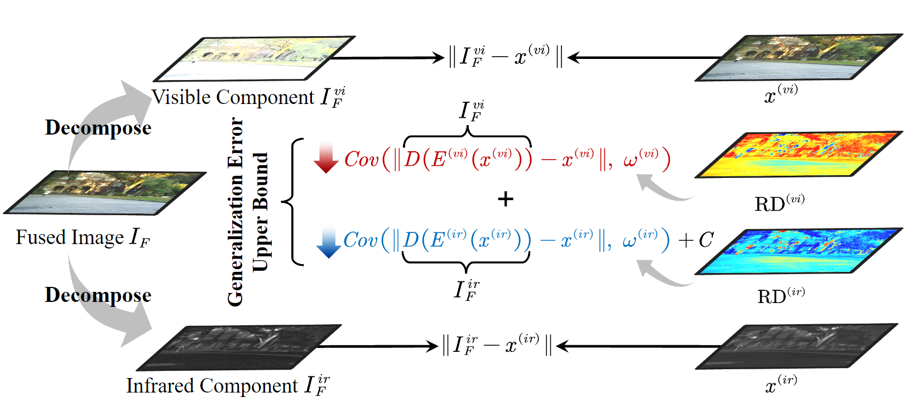

We proceed to reveal the generalized form of image fusion and derive a new test-time dynamic image fusion paradigm. It provably reduces the upper bound of generalization error. Specifically, we decompose the fused image into multiple components corresponding to its source data. The decomposed components represent the effective information from the source data, thus the gap between them reflects the Relative Dominability (RD) of the uni-source data in constructing the fusion image. Theoretically, we prove that the key to reducing generalization error hinges on the negative correlation between the RD-based fusion weight and the uni-source reconstruction loss. Intuitively, RD dynamically highlights the dominant regions of each source and can be naturally converted to the corresponding fusion weight, achieving robust results.